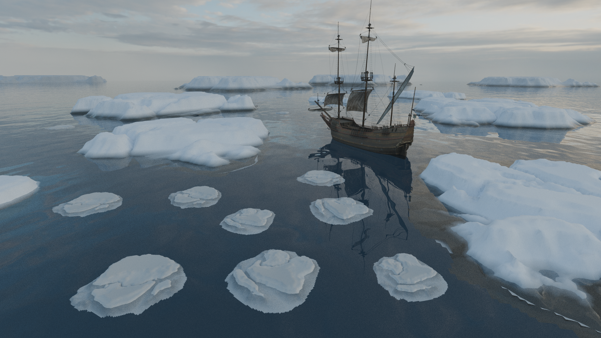
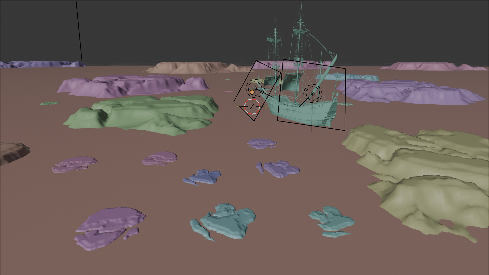

OCÉAN
ARCTIQUE
Scroll pour explorer ↓
Recréer le silence glaciaire.
Avec des pixels.
Le Concept
Un navire progressant au cœur d'un paysage glacé. Des blocs de glace sculptés, une ambiance froide et mystérieuse. Reproduire un paysage arctique crédible, c'est se confronter à la complexité de la lumière polaire et du shader de l'eau.
L'Approche Technique
Le projet m'a permis de travailler la modélisation et la sculpture des blocs de glace, ainsi que le shader de l'eau pour obtenir des reflets précis et des ondulations réalistes. Une attention particulière a été portée à l'éclairage et à l'ambiance générale.

Détail matériaux · Shader glace & eauLe Résultat
L'accent sur le shading des icebergs et l'éclairage accentue la profondeur et le relief. Ce projet combine modélisation, shaders et éclairage pour un rendu immersif et cohérent.

UrbanBall